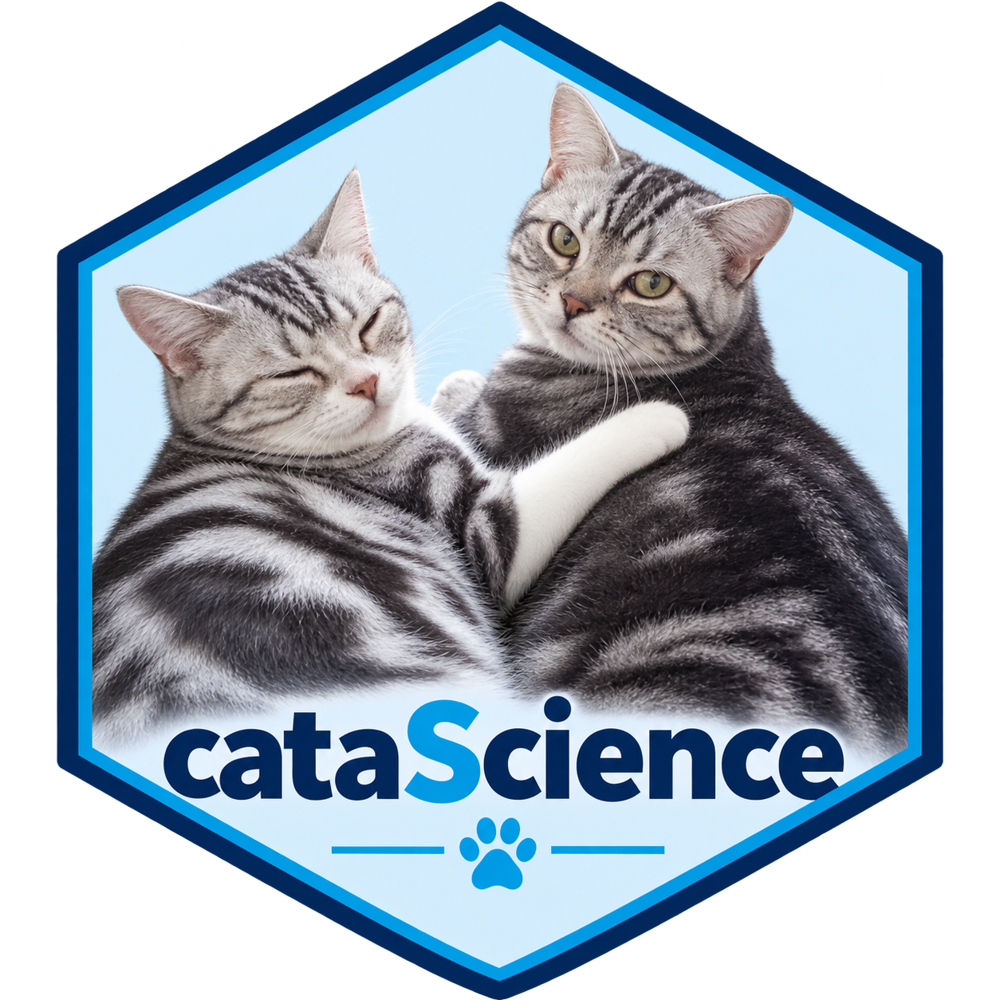

cataScience launches A Journey of Data Science, an interactive training app for people who are new to working with data. Its learning path is import → clean → visualize → understand. The AI pages help you describe a task, check an assistant’s work and keep responsibility for the result.
Most activities use buttons, tables and charts. You do not need to write R code to complete the app exercises. The optional R examples in these vignettes show how to reproduce a few of the ideas outside the app.
Install and launch
Install the released package from CRAN:
install.packages("cataScience")Or install the development version:
install.packages("remotes")
remotes::install_github("shanlong-who/cataScience")Run this in the RStudio console:
The app opens in your browser and runs in the local R session. After installation, the bundled lessons and data activities work offline. Live demonstrations with an external AI assistant need internet access and an account with that service.
The documentation website contains the guides and function reference. To use the interactive training app, launch it from R. The website does not host the Shiny application.
The R console stays busy while the app runs. Use RStudio’s Stop button or press Escape in the console to stop it. Closing the browser tab may leave the R session running.
run_cata(launch.browser = FALSE, port = 3838)For this option, open http://127.0.0.1:3838 yourself.
Choose a different port if it is already in use.
Your first learning session
- Open Home and read the data science workflow.
- Open Import and click Or use the example data for Dataset 1.
- Inspect the preview: rows, columns, data types and missing values.
- Open Cleaning → Missing data and compare two choices before applying a change. Select the variables you intend to change.
- Open Cleaning → Outliers and discuss whether a flagged value is an error or a valid observation.
- Open Visualize and choose a chart that answers one clear question.
- Open Quiz, select the topics you covered, and click Apply topics and restart.
Use Reset to original data to return to the imported dataset when comparing cleaning choices. Changes applied to a dataset feed later activities in the same session. Reloading or restarting the app starts a new session; keep your original exercise files for the next session.
Follow A guided data-quality workflow for a complete lab with questions and reproducible R examples.
The module map
| Module | What you practise |
|---|---|
| Import | Load one or two Excel/CSV files, or use the example data; inspect the preview |
| Cleaning → Missing data | Row removal, filling values, mean or median replacement, and kNN imputation |
| Cleaning → Outliers | Inspect the IQR rule; compare removal and winsorizing |
| Cleaning → Text | Select character variables and standardize letter case |
| Cleaning → Merge | Choose matching keys and a left, right, inner or full join |
| Visualize | Bar, histogram, density, line, pie, scatter and box plots, with grouping and layout options |
| Statistics | Describing data, the normal distribution, t-tests and regression |
| AI | Prompting levels, a prompt gallery, AI-assisted analysis, a methods case study and safety |
| Quiz | Topic filters, explanations and a final exercise |
| Training | The trainer playbook and image credits |
The Background, Type, Methodology and Principles tabs provide short explanations alongside the hands-on pages. You can return to them when a practical choice needs more context.
Work with your own files
The Import page accepts .csv, .xlsx and
.xls files. For an Excel exercise, use a workbook with one
sheet. Prepare a rectangular table with one header row, one variable per
column and one observation per row.
Upload one file for most activities. Upload a second file when practising joins, and check the matching keys before merging. Avoid notes, merged cells and embedded totals within the data table.
The Home page’s Download datasets button provides the bundled exercise files. You can also find the package’s primary teaching workbook from R:
example_file <- system.file(
"app", "data", "cat-dirty-data.xlsx", package = "cataScience"
)
file.exists(example_file)
#> [1] TRUEUse the bundled cat data for the first cleaning exercise. It lets learners focus on data decisions before moving to indicator interpretation.
Use the AI pages
Start with AI → Prompting levels, then adapt one prompt from Prompt gallery. Give the assistant a clear task, relevant context, an expected output and criteria for checking it.
Use AI-assisted analysis to review data and claims. The When AI gets it wrong case study shows why the current indicator methodology must be checked against its source. The app presents teaching material; it does not call an AI service or send your uploaded data to an AI assistant.
For a facilitated session, see Planning a data science and AI training.
Common questions
| Question | Answer |
|---|---|
| Do learners need R? | The package edition needs R; a separately distributed portable Windows edition can be obtained from the maintainer |
| Can I use it offline? | Yes, for the bundled lessons and data activities; external AI demonstrations need connectivity |
| Why is the preview empty? | Load a file or click the example-data button on Import first |
| How do I undo cleaning? | Click Reset to original data, then try another method |
| Why did the quiz start again? | Applying a new topic selection resets that session’s questions and score |
packageVersion("cataScience")
#> [1] '2.1.4'Report problems at the cataScience issue tracker. Include the package version, the page you used and the R console error.